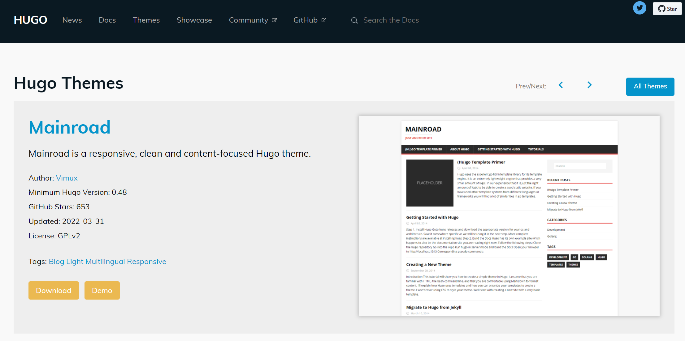

利用R语言Rmd文档+blogdown包制作个人网站
2022年4月26日
R
个人网站
本篇文章将介绍如何利用R语言blogdown包生成一个静态网站，从而用来展示个人信息、撰写博客、或者分享其他信息。
静态页面实际上说的是相对于相对于动态网页而言，它没有后台数据库、不含程序，是不能交互的网页。代码编的是什么它显示的就是什么、不会有任何改变。
Blogdown生成静态网页的过程实际只是由Blogdown包把Rmd转化成普通的markdown文本，然后由Hugo把markdown文本生成静态网页。
1 准备环境
本文将介绍如何在windows环境下，利用Blogdown生成静态网页。在介绍具体步骤之前，需要提前准备好相应的软件和环境。
1.1 安装R和R studio
1.2 安装blogdown包
安装稳定版本的blogdown
或者安装开发版本的blogdown
1.3 安装HUGO
Hugo 是一个用 Go 编写的静态网站生成器，一般只需几秒钟就能生成一个网站（每页少于 1 毫秒），被称为“世界上最快的网站构建框架”，也使 Hugo大受欢迎，成为最热门的静态网站生成器之一，被广泛采用。你可以在这里下载不同版本的HUGO
在Windows环境下，你可以通过以下几种方式安装hugo，在上面的链接中找出对应的Windows版本下载到本地，然后解压缩。
- 第一种方式：直接双击 hugo.exe 可执行文件进行安装，自动安装就可以了。
- 第二种方式：把解压后的hugo.exe的路径添加到系统环境变量中。
- 第二种方式：在通过blogdown建立新的project的时候，勾选安装hugo选项，但是国内不建议采用这种方式，因为速度很慢，而且常常安装不成功，但是如果你在墙外，可以使用这种方法。
2 使用blogdown建立一个网站
2.1 选择一个Hugo网站模板
使用hugo建立静态网站的优势不仅是速度快，而且因为它有着丰富的模板，模板的源代码都存储在github上，你可以点击这里选择一个适合自己的网站模板，然后把它在github上的地址复制下来。
如果你喜欢MainRoad的模板， 可以点击Download，会进入模板在github的存储页面，然后把模板的路径复制下来Vimux/Mainroad，后面会用到。

2.2 使用blogdown生成一个新的网站项目
- 在R studio里点击 File–New Project，选择 New Directory
- 然后，选择Website using blogdown

- 最后，在blogdown建立新项目的选项面板中，按照下面的选项填写完整，然后点击 Create Project 创建项目
- Directory name: 填入你新建项目所在文件夹名称；
- Create project as subdirectory of：
- hugo theme： 填入前面步骤中复制的网站模板的github路径，以 “github账户名/仓库名称”的格式填入，我们想要创建网站的模板的存放路径为：Vimux/Mainroad
- 最下面的复选框可以按照默认的选项选择，但是如果已经安装hugo的话，记得把Install Hugo if not installed前面的复选框取消掉。

- 完成后，在 R studio 中，点击 Addins – Serve site 可以在本地渲染网站，可以在 R studio 的右下栏中可以看到渲染的网站的样子。

2.3 新建一篇博文
点击 Addins – New Post ，填入题目，作者，标签或者分类，在Format 选项里可以选择使用普通的markdown(不能运行R程序)、.Rmd和.Rmarkdown(可以运行R程序)。